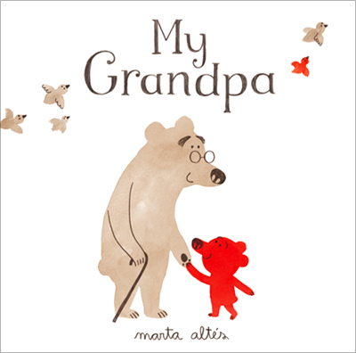

My Grandpa
By Marta Altes
My grandpa is getting old. But that's how he is, and that's why I love him.
A moving and memorable book about the very special relationship between an elderly grandfather and his adoring grandson, this unique look at old age through the eyes of a young bear is big-hearted, poignant and beautifully observed.
Age Range: 3 - 6 years
Find out more:
here
Watch a video: here